Step 1: Requirements Traceability
Contents
- Introduction
- Verification and Validation Tools Used
- What requirements are implemented in the model?
- Linking Requirements to Simulink Blocks
- Linking Requirements to Stateflow Objects
- What are the test cases to verify the implementation?
- Demonstrating Traceability to the Code
- Generating a Requirements Web View
- Summary
Introduction
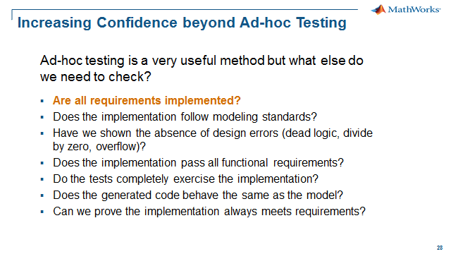
Building executable specifications is an effective and proven way to communicate design ideas and documentation of low level requirements. Simulink and Stateflow are ideal platforms for defining executable specifications in embedded software development. In the model-based development process these executable specifications are then elaborated to create production code ready models.
Executable specifications provide an opportunity for early validation of requirements. You can enhance this by providing a link between parts of your model and the corresponding requirements. And you can answer the question: Are all my requirements implemented?
Simulink Requirements provides a requirements editor to enable you to author requirements without an external tool. Simulink Requirements allows you to associate (or link) requirements to the implementation in Simulink models and to verification test cases in Simulink Test.
You can use Simulink Requirements to demonstrate requirements traceability by:
- Authoring requirements and importing external requirements for linking
- Creating "implementation" links to Simulink blocks, to Stateflow objects and to lines within a MATLAB Function Block
- Creating "verification" links to test cases authored in Simulink Test
- Using the requirements editor (a requirements centric view) to navigate to the implementation and test cases
- Creating a code generation report with hyperlinks to the requirements
In the workshop, we will use Simulink Requirements to create and view two types of requirement links:
- Implementation links
- Verification links
As we said above, we will answer the question: Are all my requirements implemented? The verification links will answer the question: Does the implementation pass all functional requirements? We will pull ahead the execution of the tests to demonstrate the implementation meets the functional requirements along with the requirements traceability to the test cases. In a later step we will show in detail how to create the test cases.
Verification and Validation Tools Used
- Simulink Requirements
- Simulink Test
What requirements are implemented in the model?
Let's first take a look at a set of requirements for our Cruise Control model authored in Simulink Requirements.
Open the requirements in the Requirements Editor: MW_CruiseControl.slreqx – click here.
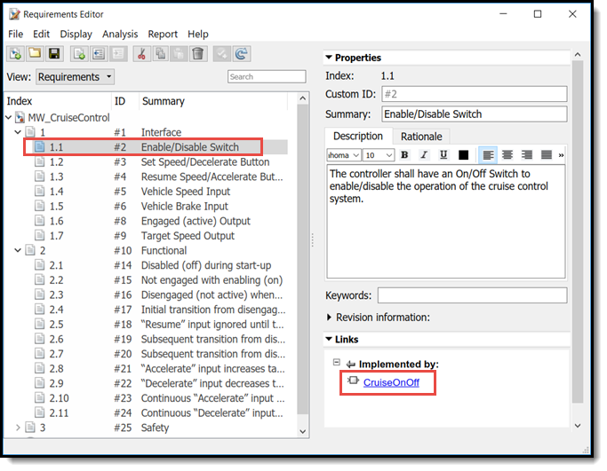
From the Requirements Editor you can navigate from the requirement to the model object using the implementation link as shown above. To navigate to the implementation, do the following:
- Select the requirement"Enable/Disable Switch"
- Click the implementation link "CruiseOnOff" inport in the Cruise Control model
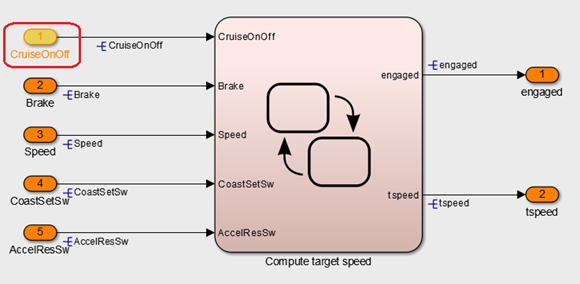
To navigate to the associated requirement,do the following:
- Right-click on "CruiseOnOff" inport to show the block popup menu
- Select Requirements Traceability / 1. "Enable/Disable Switch ..." to navigate to the associated requirement
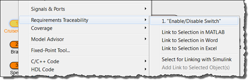
From the previous exercise, by right clicking on a block, you can tell if there is a requirement associated with that block, but what if you just want to get a "bird's eye view”? For this section, we have a model that has multiple links to the requirement document. To get a "bird's eye view” of the blocks with requirement links, we will use the "Requirements Perspective" feature.
To enter the "Requirements Perspective", do the following:
- In the model, click on the "perspective" badge in the lower right corner of the model to popup the list of perspectives.
- Select "Requirements" to enter the "Requirements Perspective".
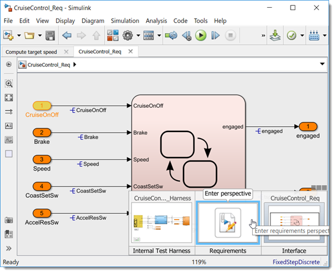
You can now see all the blocks that have requirement links have a requirements badge.
To see the associated links, do the following:
- Click on any block to see the associated requirement is now highlighted in the "Requirements list", or
- Click on any requirement to see the associated block is now highlighted
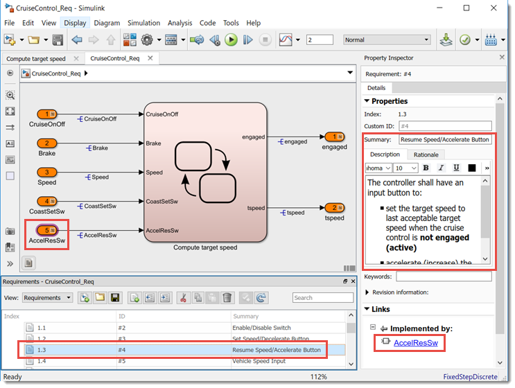
To view the links in the state chart, do the following:
- Open the "Compute target speed" subsystem to see the links associated with states and transitions in the Stateflow chart.
- Click on transitions and states to see the associated requirement is now highlighted
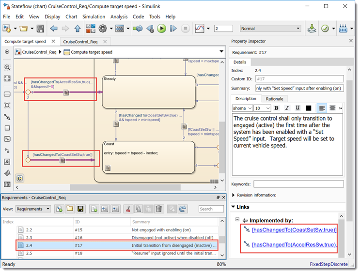
Note: Model objects can have one or more linked requirements and a requirement may be linked to one or more model objects.
Linking Requirements to Simulink Blocks
In the requirements list, we can see the implementation status for the the requirements by displaying the "Implemented" column to see if there are requirements without implementation (model) links.
To show the implementation status, do the following:
- Right-click in the "Requirements list" to show the popup menu.
- Click "Select Columns" to show the "Column Selector" popup dialog.
- Add the "Implemented" column to display in the "Requirements list"
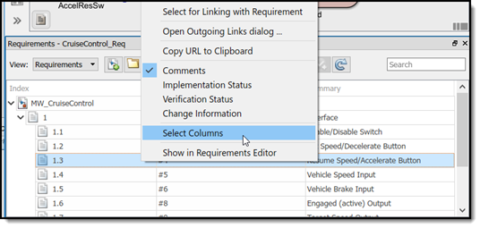
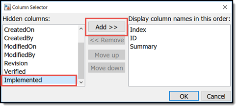
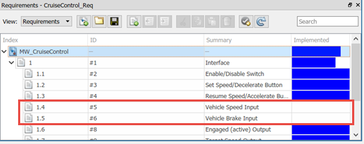
From the implementation status we can see that (2) of the "Interface" requirements have no implementation links:
- Vehicle Speed Input
- Vehicle Brake Input
Return to the top level of the Cruise Control model. From the model, we can also see that the "Speed" inport and the "Brake" inport are not linked as shown by the absence of the "requirements badge".
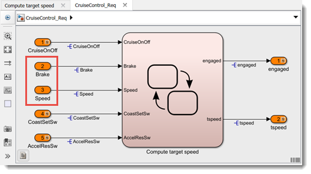
This may have happened due to missing requirements that were found during the implementation design. These requirements are color coded "green" to show they were created after the implementation.
The next task is to link these ports to the correct new requirement. To link the "Vehicle Speed Input" requirements to the "Speed" inport, drag the requirement to the block. And do the same for linking "Vehicle Brake Input" to the model "Brake" inport.

Verify the links are correct by clicking on the model object and checking the correct requirement is highlighted. You can also select the requirement to see the proper model object is highlighted.
This completes the exercise of linking requirements to Simulink objects. We will now repeat this for Stateflow in the next exercise.
Linking Requirements to Stateflow Objects
Open the "Compute target speed" state chart. Looking at the requirements link badges on the transitions, there were some inconsistencies with regard to the transitions with links and other transitions without links. One inconsistency to note is that both "hold" function transitions are are not linked to requirements.
We are pulling ahead an issue that we will find in a later step to illustrate linking to Stateflow objects.
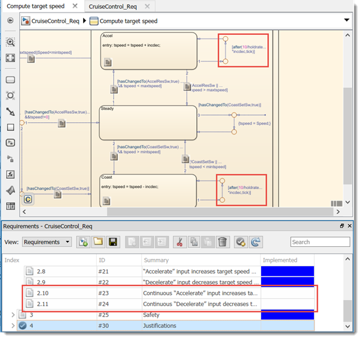
After reviewing the requirements, it was determined that there were not any requirements for the "hold" function. These have been added to the requirements document to capture the "hold" function. As you can see the (2) new "hold" requirements have no implementation links. We will now link these new requirements to the "hold" transitions.
The same linking mechanism for the Simulink blocks can be applied to Stateflow objects. To link the new "hold" function requirements to the Stateflow "hold" transitions, do the following:
- Select the requirement: "2.10 Continuous "Accelerate" input increases..."
- Drag to the transition connected to the "Accel" state, "[after(10/holdrate*incdec,tick)]".
- Next, select the requirement: "2.11 Continuous "Decelerate" input decreases..."
- Drag to the transition connected to the "Coast" state, "[after(10/holdrate*incdec,tick)]".
- Verify the links are correct by clicking on the transitions and requirements to check the associated links.
After you've completed the Statelflow linking task, you can exit the "Requirement Perspective" by doing the following:
- Select the "perspective" badge and click "Exit Perspective". model.
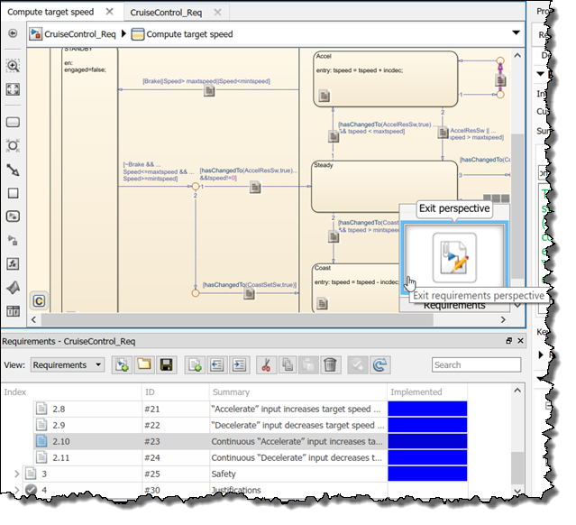
What are the test cases to verify the implementation?
In the previous sections we showed how to create and view the implementation links to the requirements. In this section we discuss how to create and view verification links to the requirements. Functional requirements require some form of verification to demonstrate the implementation behavior is meeting the requirements. Typically this is acoomplished with a set of tests that check for the expected response to a stimulus designed to exercise the requirement function.
To show the requirement links to test cases we will return to the "Requirements Editor" and open the associated Simulink Test file, "CruiseControl_TestCase.mldatx": click here.
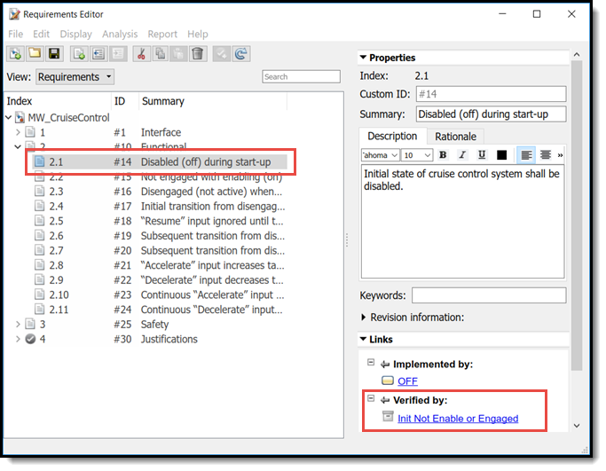
In addition to the implementation link, the requirement also has a verification link to navigate to the test case in Simulink Test.
To navigate to the test case, do the following:
- Click on the verification link "Init Not Enable or Engaged"
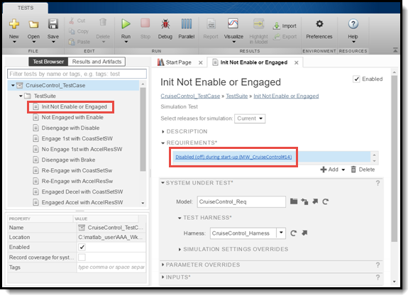
The test case is now displayed in Simulink Test along with the requirement summary hyperlink to navigate back to the associated requirement.
To navigate back to the requirement, do the following:
- Expand the "Requirement"
- Click on the requirement link "Init Not Enable or Engaged"
As we did before in the "Requirements Perspective", we can get an overall status of the implementation and the verification. With the verification status we can easily to see what requirements have linked test cases and the result of the test case.
To show the implementation status and the verification status, do the following:
- Right-click in the "Requirements Editor" to show the popup menu.
- Click "Select Columns" to show the "Column Selector" popup dialog.
- Add the "Implemented" and "Verified" column
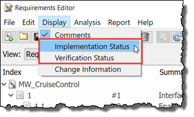
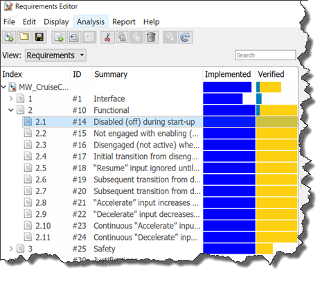
Now we can see all the requirements in the "Functional" section have implementation and verification links. Currently the verification status is "unknown" so we need to execute the test cases to update the status.
To update the verification status, do the following:
- Navigate back to "Test Manager"
- Select the "TestSuite"
- Right-click on the "TestSuite" and select "Run"
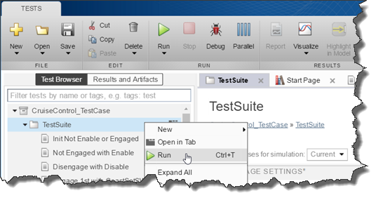
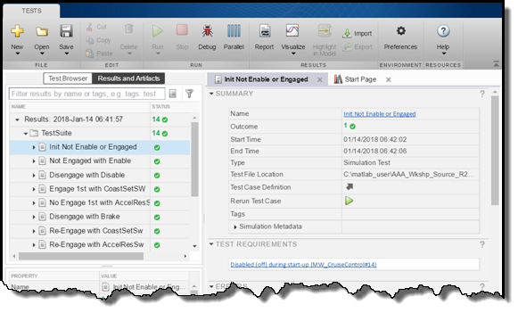
Once the tests are completed, press "Refresh" to update the verification status with the test results.
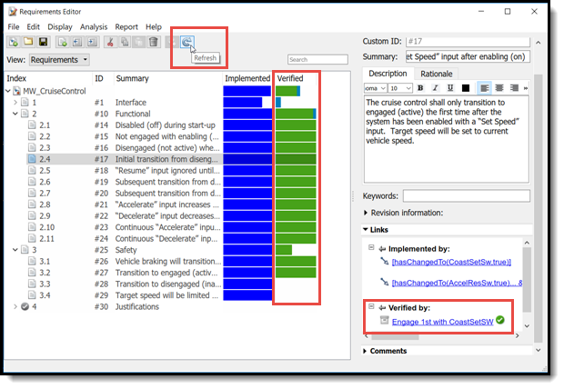
Demonstrating Traceability to the Code
Now that we have good traceability from the requirement to the model object. Let’s work through a method that will demonstrate the complete traceability from requirement to model to source code.
Save the implementation links in the model by Analysis/Requirements/Links File/Save Links so our changes will be used during code generation
To generate the code, do the following:
- Under Code, select C/C++ Code, and Build Model. Note: the options for embedding the requirement comments in the C source code have already been set.
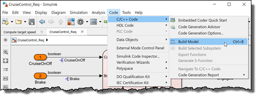
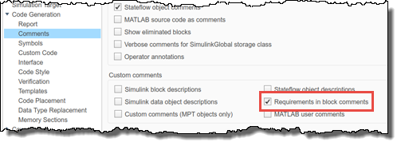
After the code has been generated (should be 5-10 sec), the following code generation report should open:
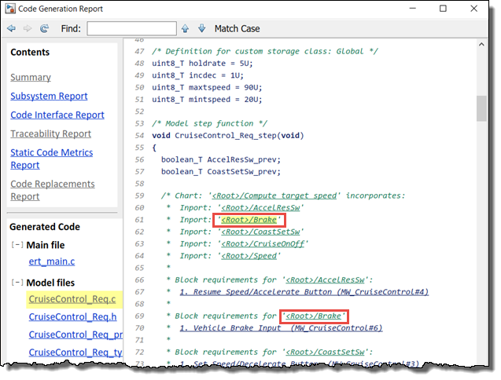
Notice the links to the model blocks embedded in the code comments.
- Click on one of the '<Root>/Brake' links to highlight the "Brake" inport block in the model.
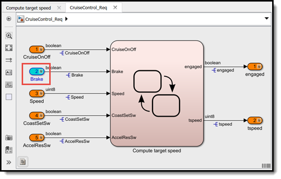
Next, we are going to use the Navigate to Code function to return from the model to the code.
- Right-click on the highlighted "Brake" inport block
- Select C/C++ Code and Navigate to C/C++ Code.
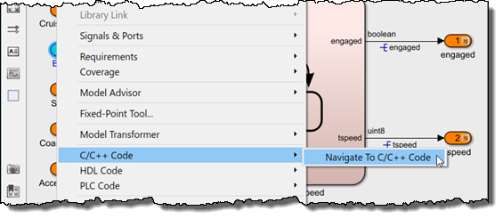
This should take you back to the code generation report with the code comment associated with that block highlighted.
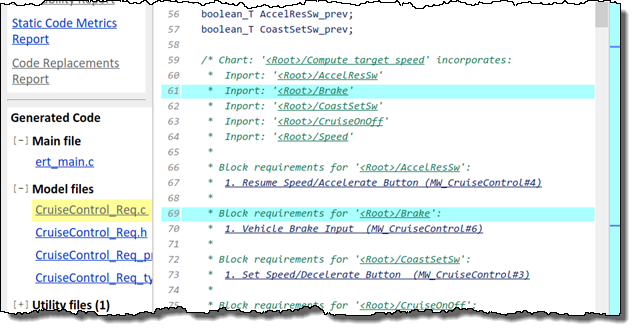
Now we will navigate to a requirement using hyperlinks in the code generation report:
- Click on "1. Vehicle Brake Input" to navigate to the associated requirement.
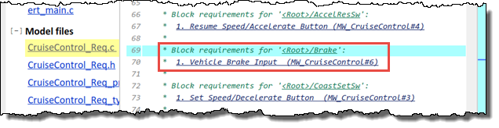
The "Requirements Editor" is displayed with the associated requirement highlighted.
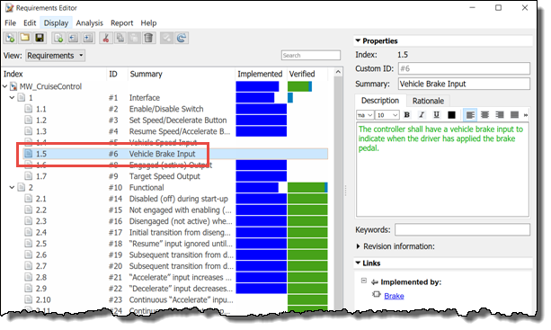
With these functions shown above, you can go from Requirement to Model to Source Code, or directly from Source Code to Requirement to demonstrate requirements traceability.
Generating a Requirements Web View
With any type of structured verification and validation activity, it is important to track what has been done. This is especially true when it comes to requirements traceability. With Simulink Requirements, you can generate a web view report that contains a snapshot of the model that is highlighted to show the links and provides a means to navigate to the requirement.
To show the reporting feature:
- Select Analysis/Requirements Traceability/Generate Web View option.
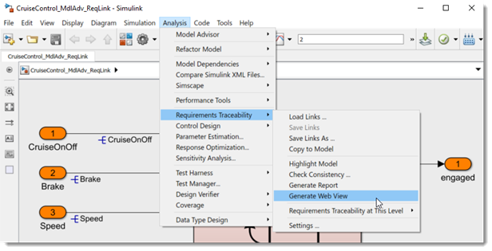
An html report similar to the following screenshot should appear that provides the ability to navigate the model and the associated requirement links.

Please note: The generated web view requires Simulink Report Generator.
Summary
We have shown the following Simulink Requirements features:
- A requirements centric view with the Requirements Editor and the Requirements Perspective
- Implementation links: linking requirements to the model
- Verification links: linking requirements to the test cases
- A view of the requirements implementation and verification status
- Generated code traceability from the code to the model and requirements
- Creating a report to demonstrate traceability
With the implementation and verification status views, we were able to see that all requirements were associated with at least one model object and many were associated with test cases. So going forward we have confidence that our model has implemented all of the requirements. We will continue to answer more of the questions in the next steps with our structured and formal testing framework for securing the quality, robustness and safety of our cruise controller.
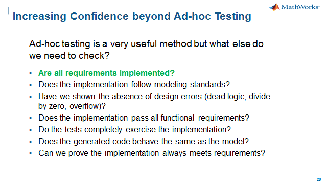
- Close all models - click here.
- Go to Step 2: Modeling Standards - click here.